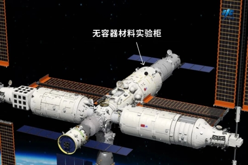
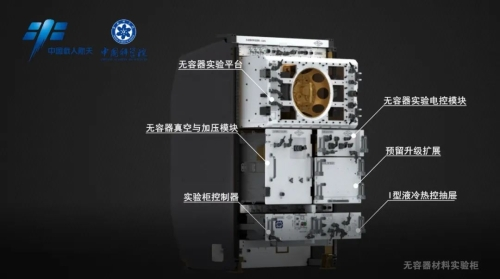
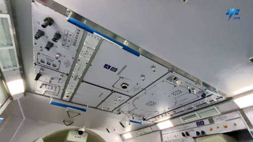

今日太空实验室｜来，教你变个硬核魔术
今天，在介绍实验之前，先来带大家回忆一个场景。
我们平常做饭的时候，都需要将食材先放进碗或锅里，再用筷子和炒勺进行搅拌 、翻炒。尽管这些餐具非常洁净，还是会有些物质残留在表面上。不知不觉间，这些物质就慢慢“混”进了食物当中。 这就不由得生出一个大胆的想法：有没有可能做出完全不被“污染”的美食？
对我们普通人来说，这简直是在变魔术。然而，这个念头，科学家也有，甚至比我们更加大胆。 如果把整个制作过程放进太空，又会怎么样？
我们平常做饭的时候，都需要将食材先放进碗或锅里，再用筷子和炒勺进行搅拌 、翻炒。尽管这些餐具非常洁净，还是会有些物质残留在表面上。不知不觉间，这些物质就慢慢“混”进了食物当中。 这就不由得生出一个大胆的想法：有没有可能做出完全不被“污染”的美食？
对我们普通人来说，这简直是在变魔术。然而，这个念头，科学家也有，甚至比我们更加大胆。 如果把整个制作过程放进太空，又会怎么样？
01 无容器材料实验柜
科学家们设计出了无容器材料实验柜，实验就在无容器实验平台中开展。

无容器材料实验柜的大致位置

无容器材料实验柜
在空间站首个舱段发射前，科学家们就“迫不及待”地将这个实验柜安置在核心舱内的“天花板”上，想要在太空验证一下。

天和核心舱模型内部展示的无容器材料实验柜
不过，这倒不是为了应用于烹饪，而是加工一些新型材料，这些材料将用于推动各个行业发展进步。
具体怎么操作呢？